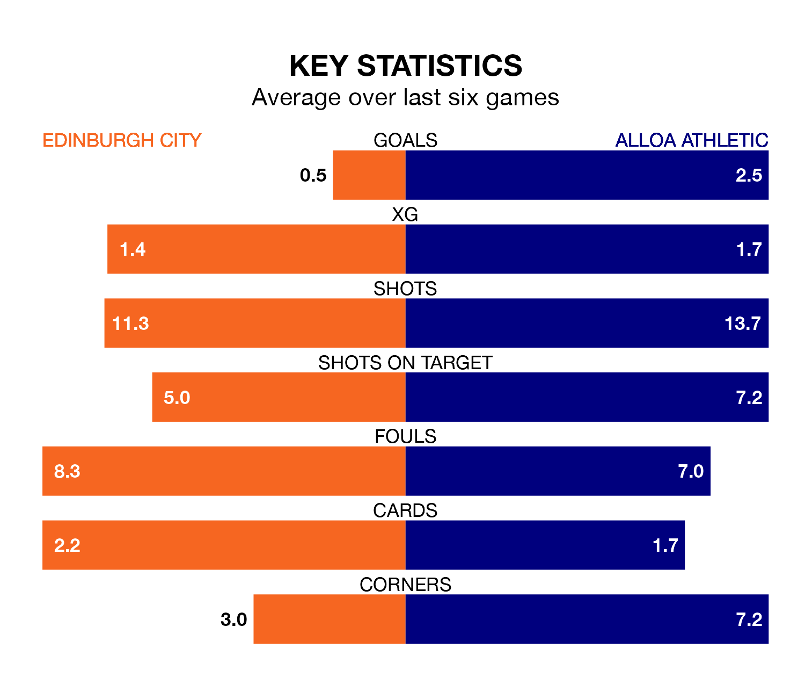

Relegation candidates Edinburgh City face a challenge against high-flying Alloa Athletic at the Meadowbank Stadium on Saturday.
Edinburgh City are rooted to the bottom of the League One table, and have picked up just two wins and five draws in their 28 games to date.
Alloa, meanwhile, are fourth in the standings with 44 points, having won 13 and drawn five of their first 27 matches, and are 28 points behind table-toppers Falkirk.
Edinburgh are in terrible form in League One, with no wins and a draw from their last six games.
With five wins and one loss over that period, Alloa's form is much better – they have taken 15 points from 18, compared to City's one.
In the last 10 years, Edinburgh and Alloa have played each other on nine occasions. Edinburgh won three of them, Alloa four, and they drew twice.
On average, Edinburgh scored 1.9 goals and Alloa 1.9 in those matches.
Their last meeting was on January 6, when Alloa won 3-1 at home.
With 30 goals in 28 games so far this season, the hosts are the league's lowest scorers with 1.1 goals per game. And they are conceding more than average, letting in 76 goals at a rate of 2.7 per game.
Athletic, meanwhile, are average scorers, with 1.6 goals per game. They have also conceded 1.6 goals per game.
In Bobby Wales, the away team have one of the league's most on-form strikers so far this season. He has notched eight goals in 19 appearances, to sit eighth in the scoring charts.
His goal rate of one every 205 minutes is slightly quicker than that of Robert Mahon, Edinburgh's top scorer with a goal every 137 minutes, and a total of seven goals in 16 games.
Edinburgh's last match was on March 9, a 1-0 loss against Hamilton Academical.
Alloa beat Kelty Hearts 3-0 last time out, also on March 9, with Kurtis Roberts, Scott Taggart and Taylor Steven on the scoresheet.
Updated: 15:10 (UTC), 15/03/24